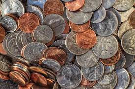

About 50 Cent
There is a large misconception that 50 Cent is really just two quarters. While that is his most efficient form, he could also be 5 dimes, 10 nickels, or 50 pennies. You see, he is very complex, unlike his rival Nickel Back, who is just the back of a nickel. I bet that's not worth very much anyways! Now if you did manage to meet 50 Cent and go with him to dinner, you couldn't get very much with him and would have to bring your own money. He is a rapper, but keep in mind, he is only 50 cents.It's also proably quite rude to use him as currency, as he would have to be passed around and put in a drawer, and I don't think he would appreciate that very much.
In the image to the left here, we can see a 50 Cent family reuinion. Note the older family members, like 68 Cent and 80 Cent. There's also some little cousins, for example we can see 37 Cent, the baby of the family. It's really touching to see how even celebrities spend time being happy with their families, just like the rest of us!